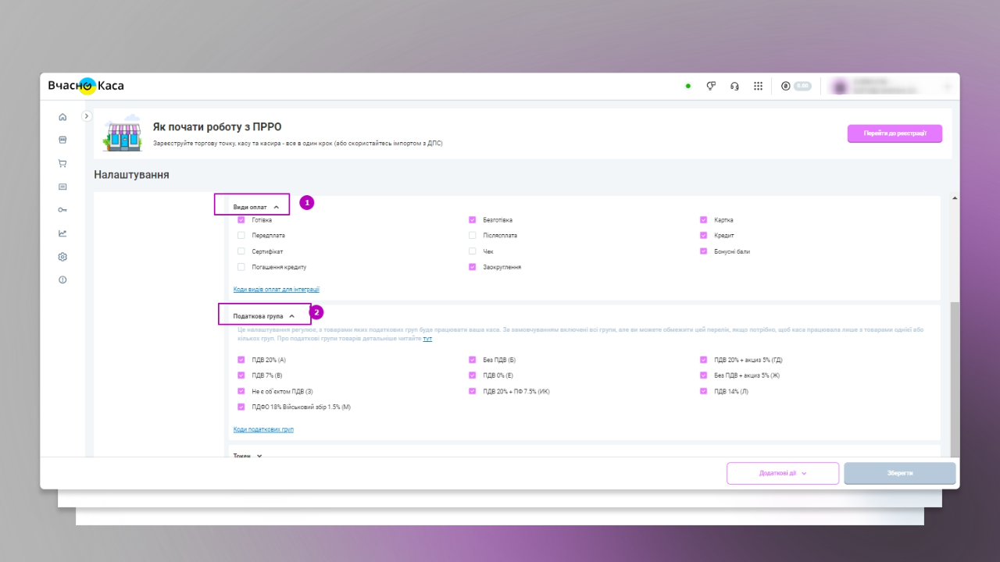

Module Vchasno kasa connector
Module Vchasno kasa
connector- Odoo integration with the Vchasno.kasa service via API, which allows you to work directly from the Odoo
POS interface without going to the Vchasno.kasa account itself.
- Make a Retail sale or return and send information to the State Tax Service.
- Make a sale or return for Orders on the website and send it to the State Tax Service.
- Print a receipt to the customer and/or send it electronically.
- Receive and print the X-Report.
- Receive and print the Z-Report.
Advantages of the module:

Simplicity and efficiency:
Vchasno kasa connector easily and quickly integrates Vchasno.kasa with the Odoo software cash register via API. Fiscalizes and sends fiscal receipts to the client by email or any convenient messenger.

Compliance with legislation:
The Vchasno kasa connector helps your business comply with all tax obligations regarding
accounting and fiscal data transmission and helps you avoid possible tax penalties.
Effective integration:
Vchasno kasa connector provides automatic accounting and data processing. After
connecting, Vchasno kasa connector starts automatically recording and accounting for
fiscal data related to payments in your business.

Providing reports:
The Vchasno kasa connector allows you to generate and provide the necessary reports for
the tax service and internal audit.
Minimizing risks:
Using the Vchasno kasa connector, you reduce the likelihood of errors and shortcomings in
accounting, which reduces the risks for your business.
Automatic sending of checks:
The ability to completely refuse to print fiscal receipts and simply send them to customers via email, Viber, and SMS.
Main Module Functions:
 Automatic
registration of sales and return receipts in the Vchasno Kasa service.
Automatic
registration of sales and return receipts in the Vchasno Kasa service. Generating
a printed form of a check received from the Vchasno kasa service.
Generating
a printed form of a check received from the Vchasno kasa service. Sending
a link to the fiscalized receipt on the STS server to the client via email, Viber, and SMS.
Sending
a link to the fiscalized receipt on the STS server to the client via email, Viber, and SMS. Function
of printing, uploading a receipt and checking a receipt to the State Tax Service
Function
of printing, uploading a receipt and checking a receipt to the State Tax Service  Create
and fiscalize checks from the list of Sales Orders.
Create
and fiscalize checks from the list of Sales Orders. Opening
and closing shifts in Vchasno.kassa from the Odoo POS interface.
Opening
and closing shifts in Vchasno.kassa from the Odoo POS interface. Ability
to check the status of communication with Vchasno.kassa.
Ability
to check the status of communication with Vchasno.kassa. Transferring
information about cash deposits and withdrawals to Vchasno.kassa.
Transferring
information about cash deposits and withdrawals to Vchasno.kassa. Generating an X-report from Vchasno.kassa data.
Generating an X-report from Vchasno.kassa data. Z-report
registration, printing, and storage.
Z-report
registration, printing, and storage. Fixing
the fiscal number of the Z-report in the session log and the ability to re-print the registered
Z-report.
Fixing
the fiscal number of the Z-report in the session log and the ability to re-print the registered
Z-report. History
of working with sessions.
History
of working with sessions. Display
of fiscal information on checks: fiscal number, QR-code.
Display
of fiscal information on checks: fiscal number, QR-code. The
ability to reprint a fiscalized receipt.
The
ability to reprint a fiscalized receipt. Fixing
the sending of the check to the customer in the Order.
Fixing
the sending of the check to the customer in the Order. Displaying
receipts in the history of the application and contact.
Displaying
receipts in the history of the application and contact. Work
logs integration with Vchasno.kasa.
Work
logs integration with Vchasno.kasa.
Description of the Module:
1. Registration and setup in Vchasno.Kasa:
Add a point of sale and a cash register. To start issuing receipts, you need to register a point of sale, a cash register, and a cashier with the State Tax Service. With Vchasno.Kasa you can do this in one step. Fill out the form and all three applications will be sent to the State Tax Service at the same time.
Set up a cash register. Set up payment types and tax groups you will work with:

Check the tax groups and types of payment you need at the cash register:

2. Installing and configuring the module Vchasno kasa connector:
Download and install the module Vchasno
kasa connector in Odoo.
Add the POS terminals to the POS dashboard:
Specify tax groups. To do this, go to the Main menu ->
Cash register -> Settings -> Taxes. If necessary, click the New button or open the Taxes
card. Go to the Advanced settings tab and fill in the Vchasno tax type field according to the
codes of the Vchasno.kasa tax groups:
Specify the types of payment at the cash desk. To do this,
go to the Main menu -> Cash register -> Settings -> Payment methods. Be sure to fill in
the On time payment type field according to the codes of the Vchasno.kassa payment type:
Add a token for the cash register to which the checks will be sent. To do this, go to the Main menu -> Cash register and from the dashboard, click the button with a vertical dot () on the POS card and click Edit. After that, a pop-up window will open in which you can connect the Vchasno.Kasa Token:
You can select a cash register token
in the Vchasno.kassa web office (https://kasa.vchasno.ua/), by
going to the Settings of a particular cash register (the "Configure cash register" button on the "Points
of sale and cash desks" tab).
3. Work with the Vchasno kasa service through the Odoo POS interface:
Go to your POS and add products. After adding all the products,
click "Payment". When you click on the "Confirm" button, the receipt will be sent to Vchasno kasa, and
after it is fiscalized by the State Tax Service, you will see a screen with a fiscalized receipt and a
link to it.
Now you can generate an electronic receipt to send it to the buyer:
To transfer the receipt to the customer, choose a convenient way to send it - by mail, via message, in the form of a QR code, or in printed form:
If you work with Sales Orders in the Odoo Sales section and
need to fiscalize a sales receipt, you can pay for it directly from the Cashier
terminal.
To do this, click the Quotations/Orders button in the Cash Terminal section to
get a complete list of quotations and sales orders created in the Sales section.
From the list of customer orders, select the necessary one
to make a payment.
Enter the amount and click Confirm. The check will be sent
to the State Tax Service, and you will see a screen with a fiscalized check and a link to
it.
To return the goods and reimburse them, you need to click the "Refund" button from
the cashier's workstation, select the appropriate order. Then select the item and quantity to be
returned using the keyboard and click "Refund":
Then choose a payment method. Enter
the amount you are refunding to the buyer and click "Confirm". The check will be sent to the State Tax
Service, and you will see a screen with a fiscalized check and a link to it:
All that remains is to transfer the check to the client in a way convenient for you.
Before closing the shift, check the correctness of the information in the Vchasno kasa service for compliance with the data in Odoo by making an X-report.
To do this, from the POS dashboard, click the REPORT (X) CT button, which will generate a request for an X-report in the Vchasno.kassa account.
The X-Report opens in pdf format, which can be saved or printed:
At the end of the shift, close the session in the POS cashier
interface and click the CLOSE SHIFT (Z) button of the KT, which will automatically send a request to
close the shift to Vchasno.kassa and register the Z-report with the State Tax Service:
The
registered Z-Report opens in pdf format, which can be saved or printed:
If you have additional power supply or are experiencing problems with the Module Vchasno kasa connector, please contact the support service:
The company Implementation Practice Solution "Odoo for Ukraine", which is an official partner of Odoo and a member of the Ukrainian Association of Odoo, provides comprehensive services for the development and development of add-ons for an ERP system on the Odoo platform for businesses of a large scale y, we care about the entire life cycle of the project, based on the concept until ready to serve.